Types and Time
Languages, Tools, and Methods
for Reliable Systems Engineering
Nikolaus Huber
Contributions
Mimosa: A Language for Asynchronous Implementation of Embedded Systems Software
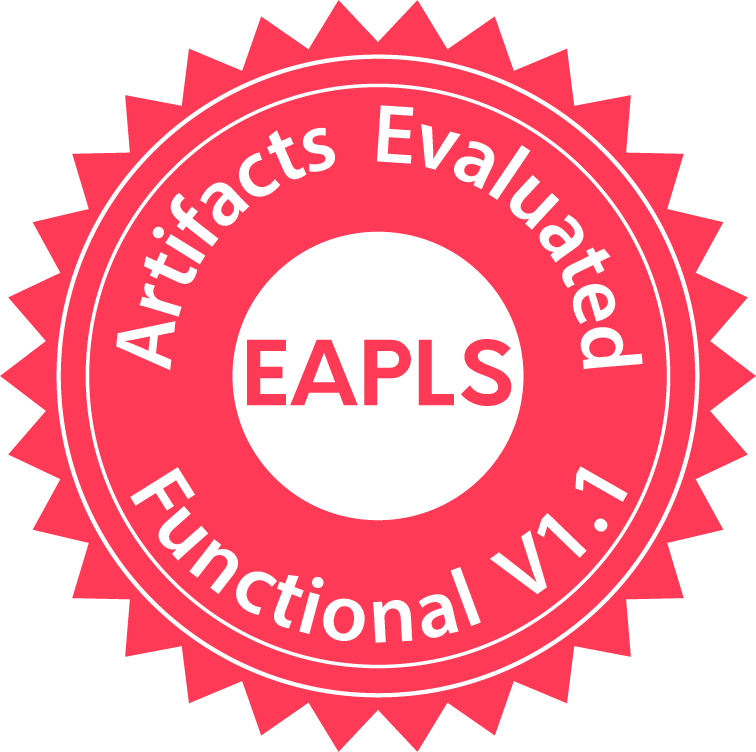
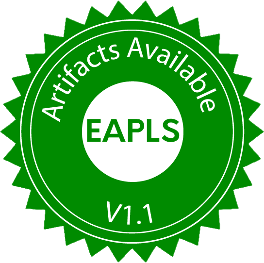
Compiling the Mimosa Programming Language to RTOS Tasks
Dynamic Verification of OCaml Software with Gospel and Ortac/QCheck-STM


An Encoding of Interaction Nets in OCaml
Mimosa: A Language for Asynchronous Implementation of Embedded Systems Software
Compiling the Mimosa Programming Language to RTOS Tasks
Artifact:
Motivation
- Synchronous paradigm
- Lustre/SCADE, Esterel, Signal, ...
- safety-critical embedded control
- Modern execution platforms
- Multi- & many-core processors
- distributed systems
- (Safe) updates?
Mimos
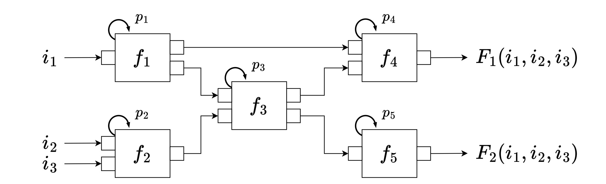Mimos: A Deterministic Model for the Design and Update of Real-Time Systems
Wang Yi, Morteza Mohaqeqi, Susanne Graf
International Conference on Coordination Languages and Models (COORDINATION 2022)
International Conference on Coordination Languages and Models (COORDINATION 2022)
Our contribution
- MIMOS Application language (Mimosa)
- Focus on formal semantics
- Naturally divides into
- Semantics for computation
- Semantics for coordination
- Prototype simulator
- Compilation scheme
step print_int (_ : int) --> ()
step add (x, y) --> z { z = x + y }
step split x --> (o1, o2, o3) { o1, o2, o3 = x, x, x }
channel a : int = { 1 }
channel b : int = { 0 }
channel c : int
channel d : int
node add implements add (a, c) --> (b) every 10ms
node split implements split (b) --> (a, d, c) every 10ms
node print implements print_int (d) --> () every 10ms
Design choices
- Memory operators
- \[ \begin{array}{c|llll} {} & 1 & 2 & 3 & \cdots \\ \hline x & x_1 & x_2 & x_3 & \cdots \\ y & y_1 & y_2 & y_3 & \cdots \\ \textbf{pre}\; x & \bot & x_1 & x_2 & \cdots \\ x\, \bm{\rightarrow}\, y & x_1 & y_2 & y_3 & \cdots \\ x\; \textbf{fby}\; y & x_1 & y_1 & y_2 & \cdots \end{array} \]
- Selective evaluation:
-
$\textbf{if}/\textbf{then}/\textbf{else}$, $\textbf{either}/\textbf{or}$, $\textbf{fby}$
Step semantics
- How to model state?
- Big-step + rewrite semantics
Simulation
- Deep embedding into OCaml
- Step evaluation → direct translation
- Node execution → discrete-event simulation
- Step prototypes → OCaml functor
Step Compiler overview
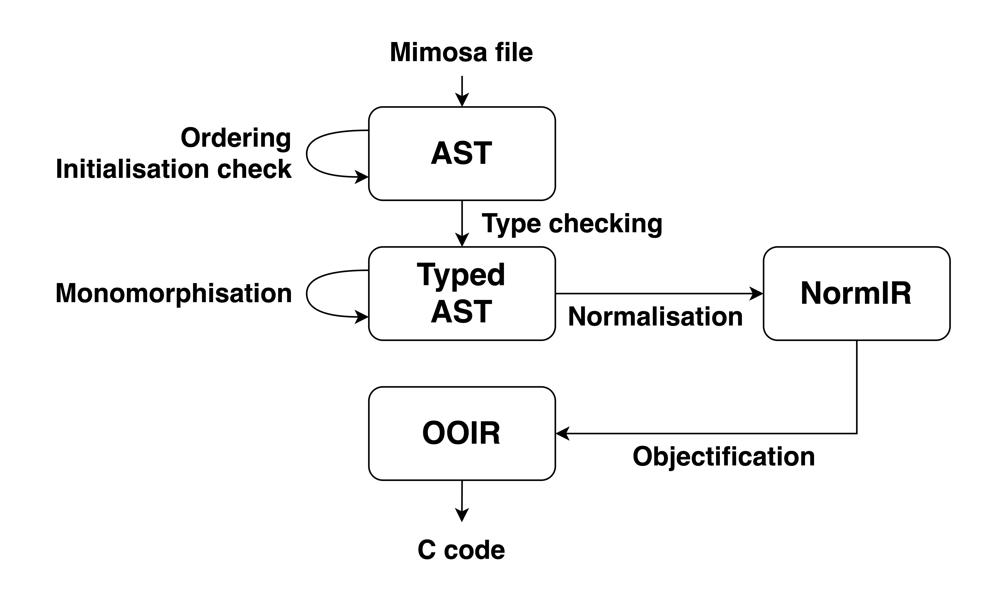Future work
- Extension of type system
- float, double, strings, ...
- algebraic data-types
- Additional read/write strategies
- Registers
- Upto-k
- Effect type system
step print_int (_ : int) -[ IO ]-> ()
Dynamic Verification of OCaml Software with Gospel and Ortac/QCheck-STM
Artifact:

- Caml (ML dialect) + OO
- Functional core
- Many imperative features
- References
- Mutable arrays
- I/O
- Exceptions

Infer
Astrée
...
Gospel
- Behavioural specification language
- ACSL, JML, ...
- Type invariants, function pre/post conditions, mutability, exceptions, ...
- Tool agnostic
- Cameleer
- Why3gospel
- ORTAC
- ...
ORTAC
- (O)Caml (R)un(T)ime (A)ssertion (C)hecker
- Module I/F + GOSPEL ⇒ code for testing
- Plugins
- Wrapper
- Monolith
- QCheck-STM
- ...
QCheck-STM
- QCheck + state
- black-box, model-based state-machine testing
Stack (Excerpt)
type 'a t
exception Empty
val create : unit -> 'a t
val push : 'a -> 'a t -> unit
val pop : 'a t -> 'a
val is_empty : 'a t -> bool
type 'a t
(*@ mutable model contents : 'a sequence *)
val create : unit -> 'a t
(*@ t = create ()
ensures t.contents = Sequence.empty *)
val push : 'a -> 'a t -> unit
(*@ push v t
modifies t.contents
ensures t.contents =
Sequence.cons v (old t.contents) *)
val is_empty : 'a t -> bool
(*@ b = is_empty t
ensures b = match Sequence.length t.contents with
| 0 -> true
| _ -> false *)
val copy : 'a t -> 'a t
(*@ r = copy t
ensures r.contents = t.contents *)
val transfer : 'a t -> 'a t -> unit
(*@ transfer t1 t2
modifies t1.contents
modifies t2.contents
ensures t1.contents = Sequence.empty
ensures t2.contents =
(old t1.contents) ++ (old t2.contents) *)
Evaluation - Errors/Bugs found
Hashtbl
val create : ?random:bool -> int -> ('a, 'b) t
(** [Hashtbl.create n] creates an empty hash table, with
initial size [n]. For best results, [n] should be on the
order of the expected number of elements that will be in
the table. The table grows as needed, so [n] is just an
initial guess. ... *)
type ('a, 'b) t
(*@ mutable model contents : ('a * 'b) list *)
val create : ?random:bool -> int -> ('a, 'b) t
(*@ h = create ?random size
checks size >= 0
ensures h.contents = [] *)
Gospel specification violation in function create
File "hashtbl.mli", line 7, characters 11-20:
size >= 0
when executing the following sequence of operations:
[@@@ocaml.warning "-8"]
open Hashtbl
let protect f = try Ok (f ()) with e -> Error e
let sut0 = create ~random:false 16
let r = protect (fun () -> create ~random:true (-8))
assert (match r with
| Error (Invalid_argument _) -> true
| _ -> false)
(* returned Ok () *)
Errors found
- Documentation fix
- Hashtbl.create (initial size guess can be negative)
- 2 bugs in Varray library
- 7 bugs in Bitv library
- 3 functions with possible integer overflow
- 2 functions with possible division-by-zero
- 2 functions throwing unexpected exceptions
- ...
Evaluation - API coverage
Future work
- Aliased SUT arguments
- Higher-order functions (map, fold, iter)
- Utilise requires clause for command generation
- Parallel testing
An Encoding of Interaction Nets in OCaml
Artifact:
Generalised Algebraic Data Types
type expr =
| Lit of int
| Eq of expr * expr
| If of expr * expr * expr
let rec eval (e : expr) : ??? = ...
type _ expr =
| Lit : int -> int expr
| Eq : int expr * int expr -> bool expr
| If : bool expr * 'a expr * 'a expr -> 'a expr
let rec eval : type a. a expr -> a = function
| Lit n -> n
| Eq (e1, e2) -> (eval e1) = (eval e2)
| If (e1, e2, e3) ->
if (eval e1) then (eval e2) else (eval e3)
Graph rewriting
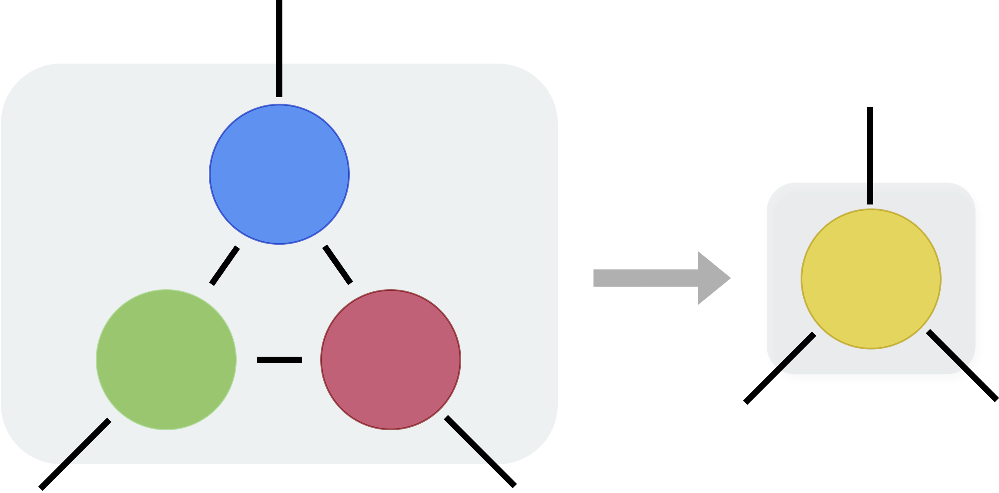
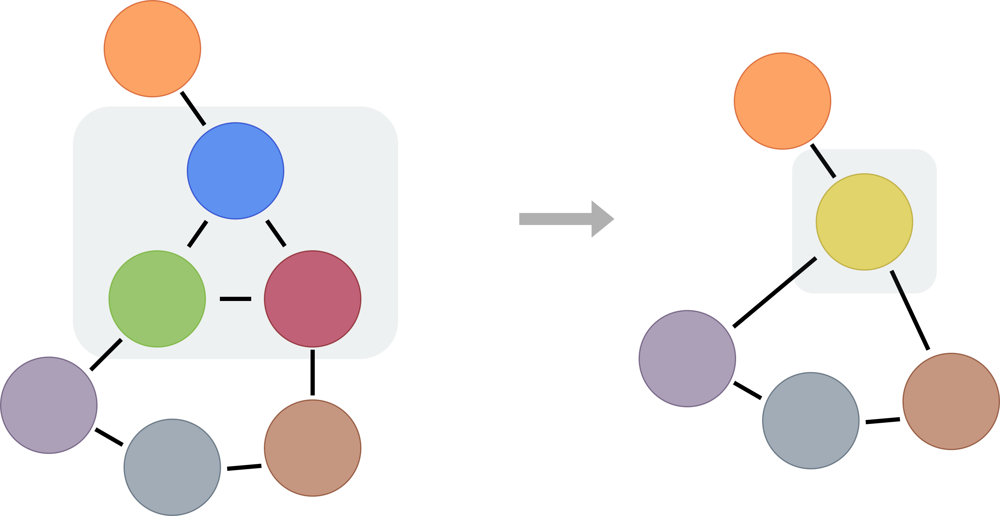
sub-graph isomorphism problem ⇒ NP-complete
Interaction nets
- Specific form of graph rewriting
- Visual programming language
- Invented by Yves Lafont
- Many interesting properties
Interaction net primitives
- Agents:
-
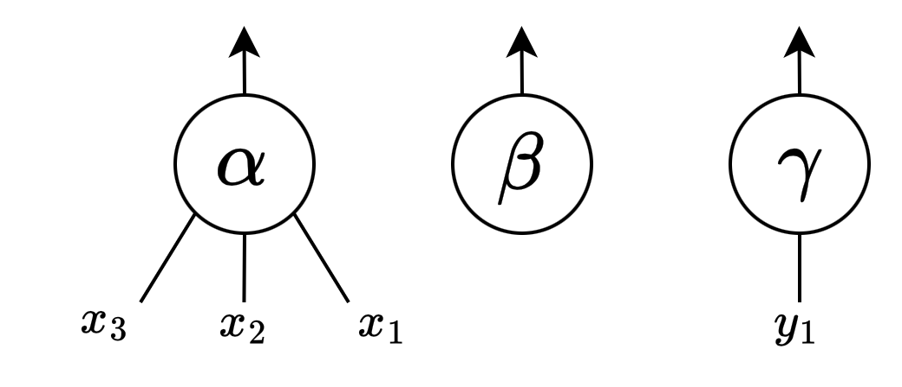 \[\begin{align*} \Sigma &= \{\alpha, \beta, \gamma\} \\ \textbf{ar} &: \Sigma \rightarrow \mathbb{N} \end{align*}\]
- Rules:
- 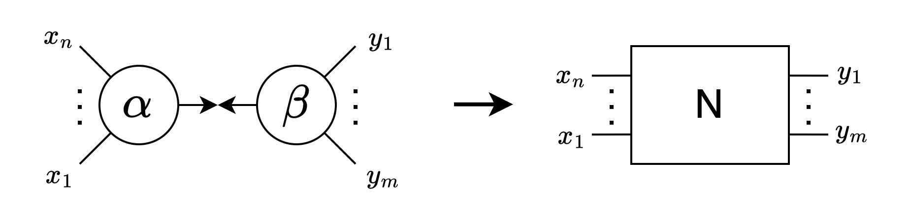
Example - Arithmetic
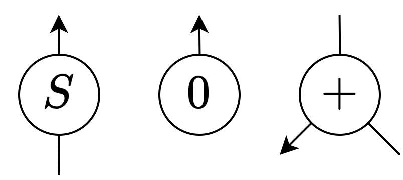
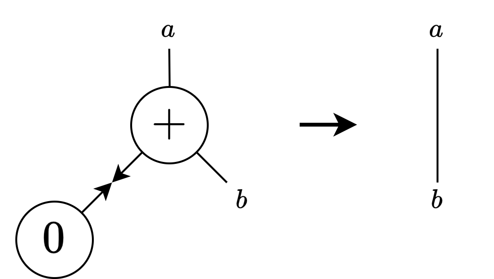
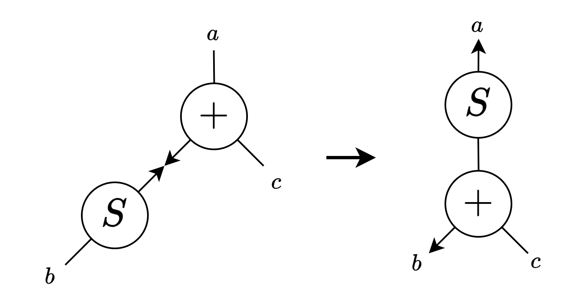
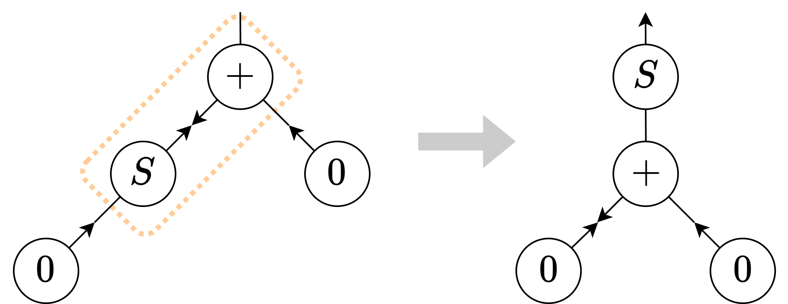
Typing Issues
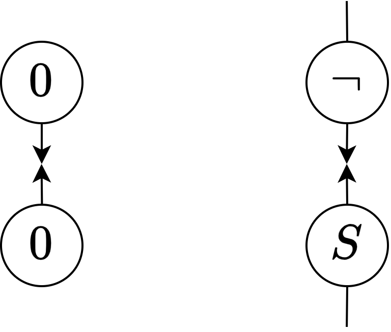Lafont's Type System
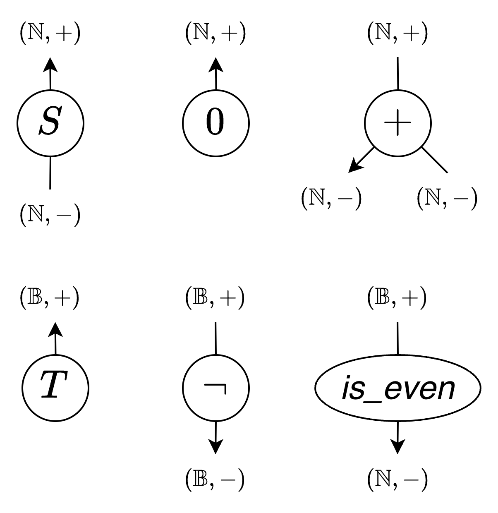Properties
- Locality ⇒ parallel evaluation
- Easy to indentify pattern graphs
- No overlapping rules ⇒ strong confluence
Motivation
- No previous encoding in OCaml
- Most existing encodings focus on efficiency
- Focus on type system
- Can we express this type system in OCaml?
- Can we make use of OCaml's support for parallelism?
type pos = |
type neg = |
type (_, _) agent =
| Z : (int, pos) agent
| S : (int, pos) agent -> (int, pos) agent
| Plus : (int, neg) agent * (int, pos) agent ->
(int, neg) agent
let ( -><- ) : type a .
(a, pos) agent -> (a, neg) agent -> unit = (* ... *)
Evaluation - Speedup
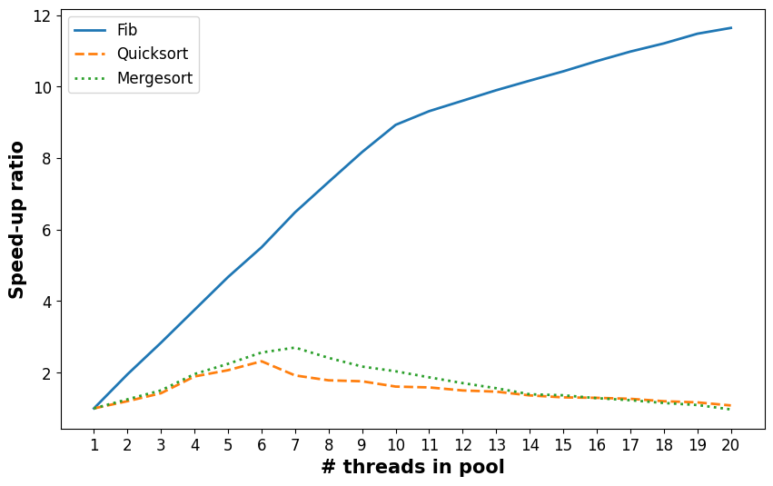Evaluation - Fibonacci
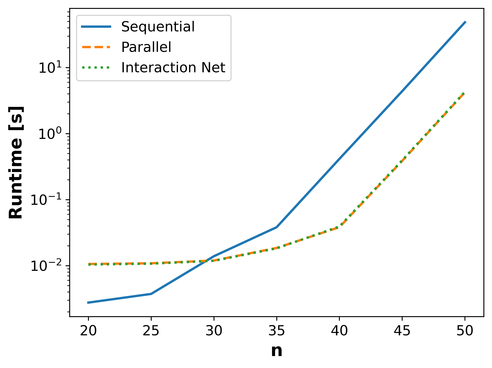Future work
- Investigate performance
- Try different parallel runtime libraries
- Compilation to interaction nets
- OCaml extension nodes?
- Compiling Mimosa to interaction nets?